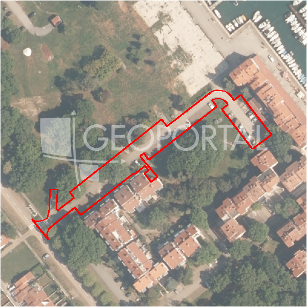

#44983 · Poreč, građevinsko zemljište s pogledom na more za izgradnju mini hote
Červar-Porat, Poreč, Istarska · zemljiste · njuskalo · status active · oglas ↗
Ocjena
- Score
- 60 rule 60 · LLM – · 12.09.2026.
- RLV
- 2,04 M€ (828 €/m²) · ratio 2,72
- Ukupna investicija
- 5,65 M€
- GBP
- 1.973 m²
- Feedback
- –
- CRM
- –
Oglas
- Cijena
- 750.000 € (261 €/m²)
- Površina
- 2.874 m² · DKP 2.466 m² (odstupanje -14,2 %)
- Prodavatelj
- agencija · RE/MAX Centar nekretnina
- Prvi put
- 11.09.2026. · zadnje 11.09.2026. · 0 d na tržištu
Povijest cijene
| Datum | Cijena |
|---|---|
| 11.09.2026. | 750.000 € |
Flagovi
zop_70_100 ZOP pojas 70/100 m (−10)zone_uncertainty zona nije pregledana (reviewed: false) (−5)
llm_pending LLM ekstrakcija/ocjena nedostupna
Komponente score-a
| rlv | {'gbp': 1972.664, 'kis': 0.8, 'nkp': 1479.498, 'noi': None, 'rlv': 2041063.98, 'ratio': 2.72141864, 'value': None, 'phases': 1, 'profile': 'obala_visestambeno', 'gdv_neto': 8285188.8, 'cost_soft': 197266.40000000002, 'gdv_bruto': 10356486.0, 'kis_known': False, 'total_inv': 5647753.44, 'cost_build': 3945328.0, 'cost_other': 710159.04, 'cost_sales': 310694.58, 'demolition': False, 'gbp_source': 'kis', 'rlv_per_m2': 827.7391304347826, 'parcel_area': 2465.83, 'parcelation': False, 'roi_on_cost': 0.4119763379755472, 'profit_at_ask': 2326740.78, 'cost_demolition': 0.0, 'total_inv_phase': 5647753.44, 'parcel_area_effective': 2465.83, 'sale_price_per_m2_nkp': 7000.0} |
| hard | [] |
| info | ['llm_pending'] |
| rubric | {'permits': {'max': 5.0, 'detail': {'permit': 'none'}, 'points': 0.0}, 'location': {'max': 15.0, 'detail': {'source': 'rlv.yaml:istra_zapad/row1', 'sale_price_per_m2_nkp': 7000.0}, 'points': 15.0}, 'physical': {'max': 4.0, 'detail': {'slope_pct': 14.0, 'slope_points': 1.6, 'sea_row1_bonus': True}, 'points': 2.6}, 'liquidity': {'max': 3.0, 'detail': {'n_cuts': 0, 'points_cut': 0.0, 'points_days': 0.008333333333333333, 'seller_type': 'agencija', 'points_fresh': 0.5, 'price_cut_pct': None, 'days_on_market': 1, 'points_private': 0}, 'points': 0.51}, 'rlv_ratio': {'max': 25.0, 'detail': {'rlv': 2041064, 'ratio': 2.721, 'asking_price': 750000.0}, 'points': 25.0}, 'ticket_fit': {'max': 10.0, 'detail': {'asking_price': 750000.0}, 'points': 10.0}, 'zone_quality': {'max': 8.0, 'detail': {'reason': 'zona nepoznata', 'source': 'nepoznato', 'zone_class': None}, 'points': 2.0}, 'profit_potential': {'max': 20.0, 'detail': {'roi_on_cost': 0.412, 'profit_at_ask': 2326741}, 'points': 20.0}, 'price_vs_benchmark': {'max': 10.0, 'detail': {'source': 'auto:Poreč', 'deviation': -0.501, 'ask_eur_m2': 261, 'benchmark_eur_m2': 173.89}, 'points': 0.0}} |
| weights | {'llm': 0.4, 'rule': 0.6, 'model': 0.0} |
| penalties | {'zop_70_100': 10, 'zone_uncertainty': 5} |
| raw_score | 75,1 |
| rlv_notes | [] |
| flag_notes | {'max_gbp': 1973, 'zop_band': '70', 'total_inv': 5647753, 'zone_code': None, 'zone_class': None, 'zone_source': 'nepoznato', 'zone_reviewed': None} |
| caps_applied | [] |
GIS
- Čestica
- k.o. 323748, k.č. 775 (pin_buffer, 0,73); k.o. 323748, k.č. 669/4 (pin_buffer, 0,69); k.o. 323748, k.č. 774/14 (pin_buffer, 0,68)
- Zona
- – (–)
- kig / kis / katnost
- – / – / –
- GP / UPU
- – · UPU –
- Pristup / nagib
- unknown · 14,0 % (max 20,1 %)
- More
- 34 m · red 1 · ZOP 70
- Zaštite
- Natura ne · zaštićeno ne · kulturno dobro ne
- Zgrade na čestici
- 0 %
- Match
- 0,73
Karta
Ortofoto (DOF)

RLV kalkulacija — pretpostavke
| gbp | {'value': 1972.664, 'source': 'kis'} |
| kis | {'value': 0.8, 'source': 'default_profila'} |
| sea_row | {'value': '1', 'source': 'gis'} |
| soft_pct | {'value': 0.05, 'source': 'profil'} |
| nkp_ratio | {'value': 0.75, 'source': 'profil'} |
| cost_other | {'value': 710159.04, 'source': 'profil: doprinosi+uređenje po m² GBP, financiranje+rezerva % gradnje'} |
| parcel_area | {'value': 2465.83, 'source': 'dkp'} |
| asking_price | {'value': 750000.0, 'source': 'oglas'} |
| margin_on_cost | {'value': 0.15, 'source': 'profil'} |
| build_cost_per_m2_gbp | {'value': 2000.0, 'source': 'profil'} |
| sale_price_per_m2_nkp | {'value': 7000.0, 'source': 'rlv.yaml:istra_zapad/row1'} |
| transfer_tax_and_acquisition | {'value': 0.06, 'source': 'profil'} |
Ekstrakcija iz oglasa
| utilities | ['struja', 'voda', 'kanalizacija'] |
Benchmarks mikrolokacije
| Vrsta | Vrijednost | n | Od | Izvor |
|---|---|---|---|---|
| land_ask_eur_m2 | 174 | 302 | 11.09.2026. | auto |
| newbuild_sale_eur_m2_nkp | 3.695 | 8 | 11.09.2026. | auto |
Opis oglasa
ISTRA,Poreč, na zapadnoj obali Istarskog poluotoka, poznata turistička destinacija za brojne domaće i strane goste. Na daleko poznate lagune,nautičke marine i domaća autohtona kuhinja posebnosti su koje privlače goste da se vrate u Istru. U blizini Poreča u smjeru Novigrada na rubnom dijelu naselja nalazi se građevinsko zemljište površine 2850 m2 za izgradnju mini hotela. Zemljište je pravilnog oblika te ima mogućnost priključenja na sve dostupne priključke(voda,struja i kanalizacija). Izvanredan pogled na more,blizina grada Poreča i mora čine ovo zemljište vrlo atraktivnom investicijom za investitore koji se bave turizmom. ID KOD AGENCIJE: 300391030-89 Habitator nekretnine d.o.o. Tel: 00385 52 435 428 Fax: 00385 52 638 220 E-mail: porec@remax-istra.hr www.remax-centarnekretnina.com